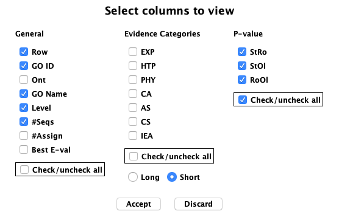
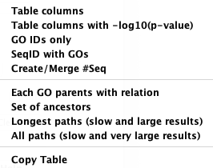

GO Annotations
The contents of this panel will depend on how the database was built with runSingleTCW:
- This panel will exist only if UniProt databases were used in annotation.
- The Slim option will exist
only if a GO_slim set was selected (not available in this sTCWdb).
- The Enrich: row of options will exist only if GOseq
has been been run (see runDE).
GO Terms may be assigned to a hit ID, or it may inherit a hit ID;
see GO Help for details
and All GO View.
In following image shows the enriched GOs for Rz (Rhizome) compared to Root (Ro), Stem (St) and Old leaf (Ol)
at a p-value of 0.001.
The #Seqs are the counts of DE (p-value<0.05) sequences for the respective GO.

The decimal number display can be changed with Decimal Display
(the above display uses color scheme #1 for the p-values).
| The The 27 evidence codes are groups into 6 Evidence categories, which
are defined on the Info popup. They can be filtered on by setting them in the
Evidence panel (not shown).
|

|
|
Show... has multiple options as shown on the right. Below are some examples.
The Export...
beside it has the exact same option, where the results will be written to file, with a choice
of All info or IDs only.
|

|
Table... has multiple options as shown on the right.
|

|


{kind=link}
{kind=link}